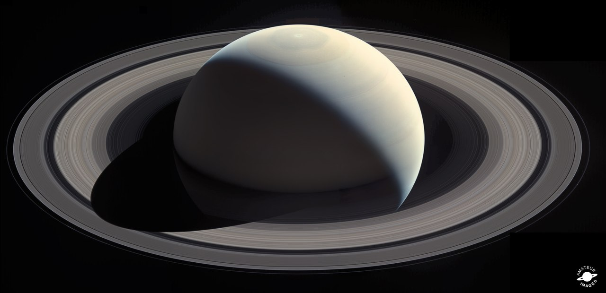
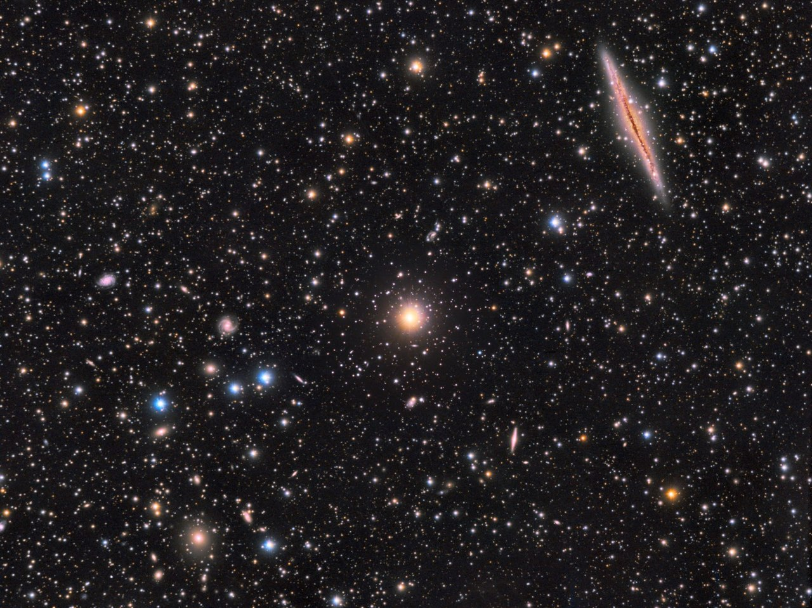
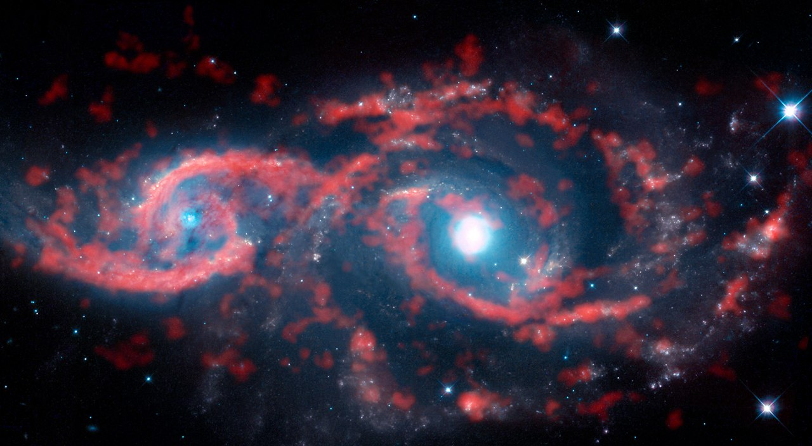
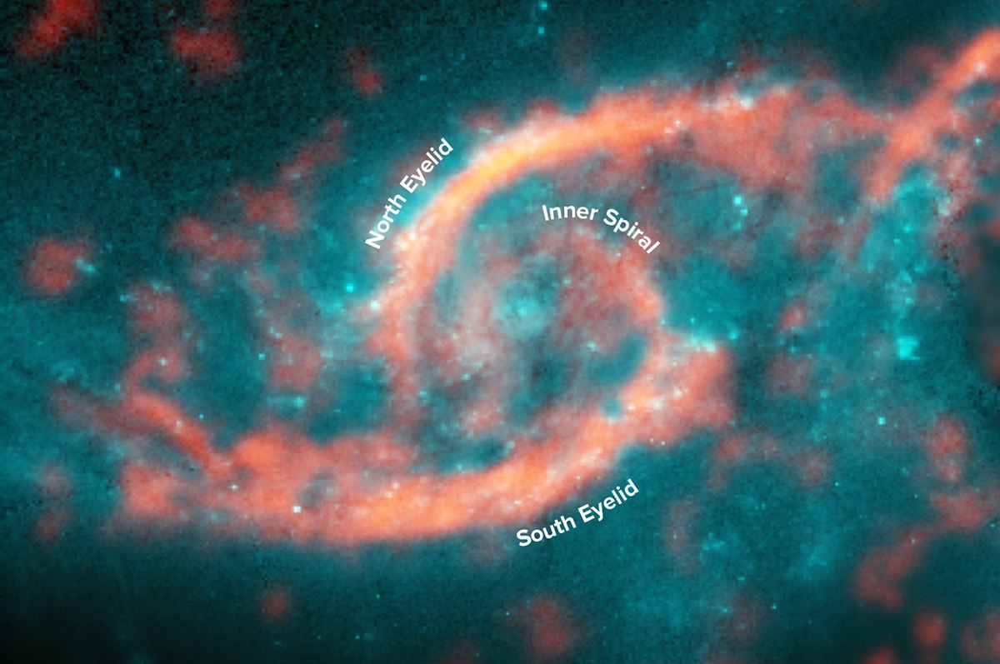
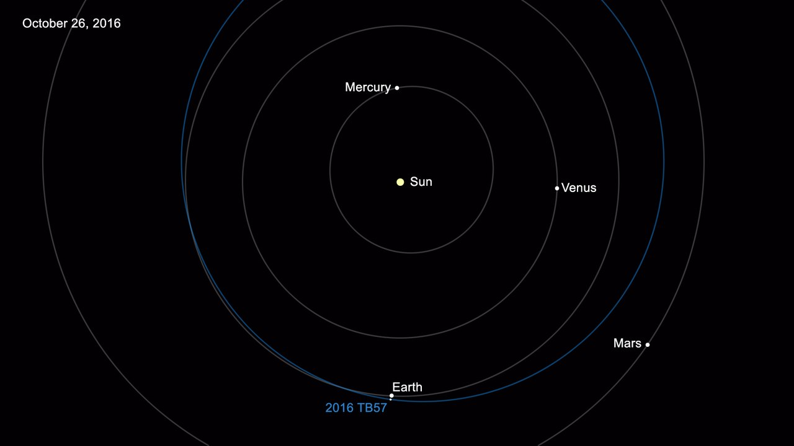
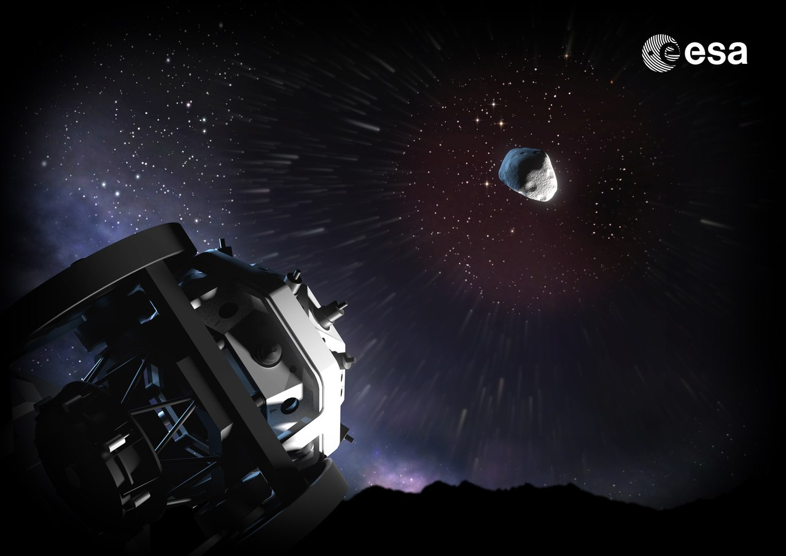
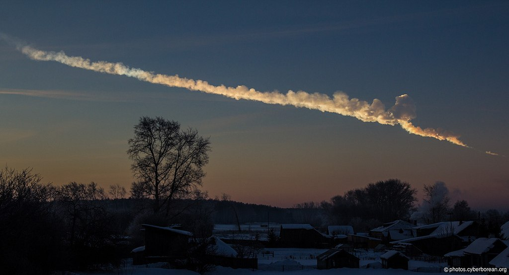
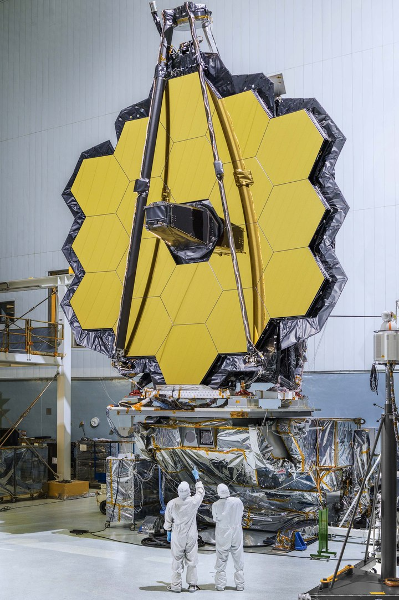
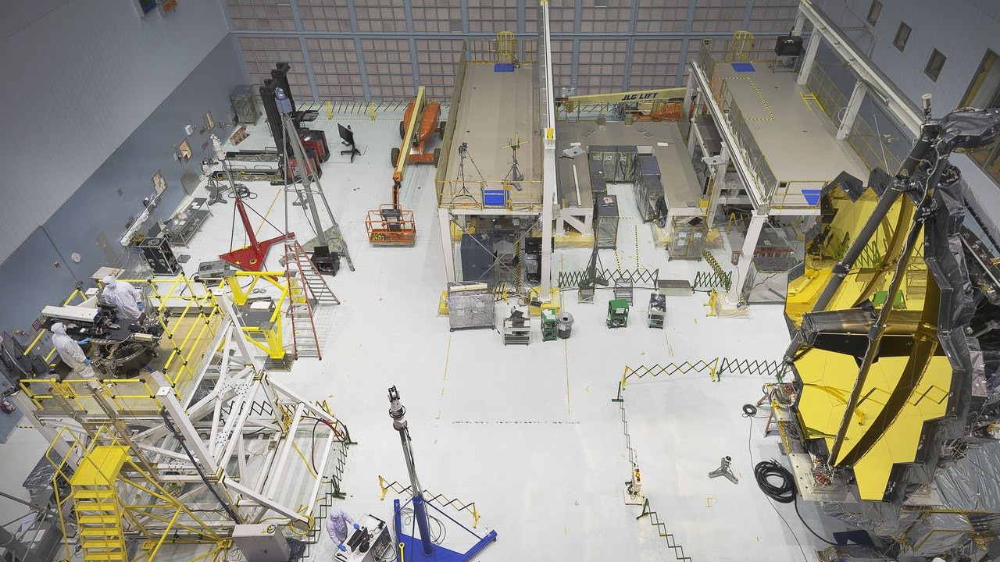

Сатурн во всей красе
Панорама газового гиганта и его колец от зонда «Кассини». Мозаика из 7 частей, на которые пошёл 21 кадр, полученный при помощи красного, синего и зелёного фильтров утром 28 октября. Виден северный шестиугольный вихрь, облачные слои на Сатурне и три спутника — Эпиметей, Атлас и Прометей.
Собрал мозаику замечательный человек и любитель астрономии Ян Реган (Ian Regan).

Далёкие галактики в созвездии Андромеды
Справа— спиральная галактики NGC 891 «Игла», видимая с ребра. Она находится на расстоянии 30 миллионов световых лет от Земли. Прекрасно видны полоса поглощающей свет межзвездной пыли в галактическом диске и балдж — центральная яркая область.
Слева — скопление галактик Abell 370 в созвездии Кита. Свет от него шёл до нас 6 миллиардов лет, оно содержит несколько сотен галактик и является гравитационной линзой для более далёких галактик, лежащих за скоплением.
Автор: Juan Lozano

Всевидящее око
Астрономы вглядываются во Вселенную. Но иногда кажется, что и Вселенная вглядывается в нас! Первое фото, составленное из изображений, полученных на телескопе ALMA (Atacama Large Millimeter/submillimeter Array) и Космическом телескопе «Хаббл», демонстрирует нам очень редкое космическое зрелище: пару взаимодействующих галактик с образованием окулярной структуры, то есть, формы, напоминающей глаз.
Да, некоторые типы касательных столкновений галактик приводят к появлению таких форм. Сами по себе столкновения галактик не являются чем-то необычным, но окулярная структура наблюдалась всего в нескольких случаях. Скорее всего, редкость эта объясняется тем, что окулярная структура сохраняется всего на протяжении десятков миллионов лет, что по меркам продолжительности жизни галактик — просто мгновение.
Из двух показанных на снимке галактик, IC 2163 (слева) и NGC 2207 (справа), окулярная структура проявляется у первой (IC 2163). Объект находится на расстоянии около 114 миллионов световых лет от Земли в созвездии Большого Пса. Данные показывают, что газ в наружной части IC 2163 движется со скоростью более 100 километров в секунду, устремляясь к центру, однако быстро тормозится.
Эти галактики, пролетая друг мимо друга, почти задевают друг друга внешними частями своих спиральных ветвей. IC 2163 с нашей точки зрения находится позади NGC 2207. Столкновение вызвало в IC 2163 настоящее цунами из звезд и газа. При этом вещество из внешних частей галактического диска устремилось внутрь галактики и эта колоссальная «волна» резко замедляется, образуя сгущение областей интенсивного звездообразования и плотные газо-пылевые фронты. Все это вместе и напоминает с виду структуру человеческого глаза.


Угроза из космоса: каталог околоземных астероидов превысил отметку в 15 тысяч объектов
13 октября 2016 года в рамках обзора Mount Lemmon Survey был найден астероид 2016 TB57. Его диаметр оценивается от 16 до 36 метров, сегодня он пролетит мимо Земли на расстоянии в пять раз большем, чем расстояние от Земли до Луны. Он стал пятнадцатитысячным обнаруженным околоземным объектом (сокращенно NEO — Near-Earth objects).
В среднем этот список каждую неделю пополняется на 30 новых объектов. Околоземным объектом считается небесное тело (астероид или комета), перигелий орбиты которого меньше или равен 195 миллионам километров (1.3 а. е.). Они могут сближаться с земной орбитой на расстояния до 50 миллионов километров, и существует вероятность пролёта такого объекта очень близко к нашей планете. Наблюдатели уже обнаружили более 90 % от оценочной численности популяции крупных NEO, диаметр которых больше километра, 10 % от популяции 100-метровых NEO и менее чем 1 % от популяции объектов, диаметр которых оценивается в 40 метров.
В настоящее время главную роль в поиске NEO играют две программы — наблюдения в рамках обзора Catalina Sky Survey и проекта Pan-STARRS (Panoramic Survey Telescope & Rapid Response System), суммарно они ответственны за обнаружение 90 % новых объектов. В 2015 году было проведено обновление одного из телескопов обзора Catalina Sky Survey, что позволило увеличить темпы обнаружения в три раза. Pan-STARRS этой осенью введет в строй ещё один телескоп. Увеличение базы телескопов и времени наблюдений позволят обнаруживать объекты, размеры которых меньше 140 метров.
Европа тоже участвует в подобных поисках в рамках программы Space Situational Awareness, в ходе которой собираются данные со многих существующих телескопов. В Чили строится телескоп Large Synoptic Survey Telescope, который примет активное участие в этой программе, кроме того, ЕКА разрабатывает проект автоматизированного телескопа, получившего название «fly-eye». Он позволяет разбить участок неба на 16 меньших участков, чтобы расширить поле зрения. В результате можно наблюдать область неба размером 6,7°×6,7°, или около 45 квадратных градусов — в 13 раз больше площади диска Луны, видимого с Земли.
Текст поста написан на основе двух статей. Оригиналы на английском:


Проект "fly-eye"

Челябинский метеороид
Новый взгляд во Вселенную
На фотографиях — главное зеркало будущего космического телескопа Джеймса Уэбба, состоящее из 18 шестиугольных зеркал. Каждое зеркало сделано из бериллия и покрыто слоем золота для более хорошего отражения инфракрасного излучения. Оно будет собирать свет от очень тусклых объектов, в результате инфракрасное «зрение» телескопа сможет заглянуть в прошлое Вселенной — на 13,5 миллиардов лет назад, чтобы увидеть первые звёзды и галактики, которые рождались в ранней Вселенной. Кроме того, он покажет нам детали эволюции галактик и далёкие планетные системы.
Сейчас главное зеркало телескопа будут усиленно тестировать — проверяют, насколько оно устойчиво к вибрациям и шумам. Для этого будет использоваться интерферометр, который будет измерять кривизну зеркала в разных точках. Затем данные будут сравниваться с идеальной компьютерной моделью зеркала, расхождения будут пытаться устранить.
Оригинал на английском:

